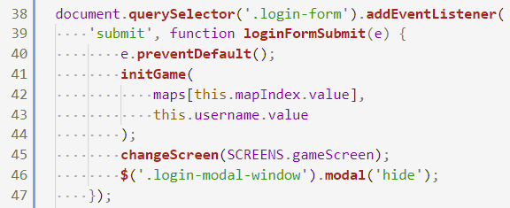
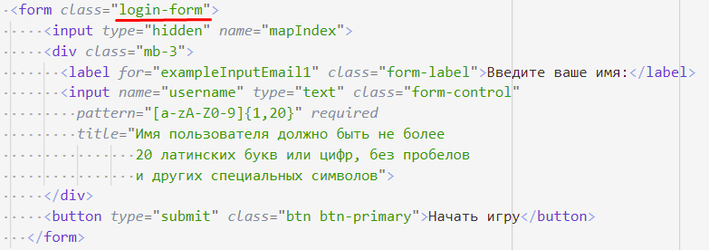
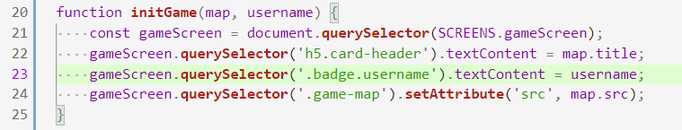
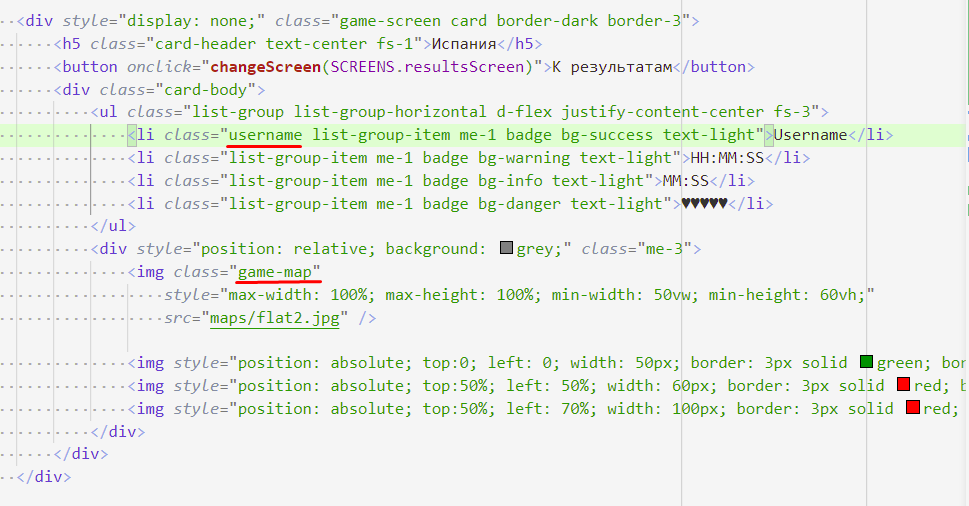

202202190215 Обработка отправки формы, переход на экран игры
Четвертый этап реализации формы входа, второго модуля по WorldSkills КОД 1.3.

Функция, которая обрабатывает отправку (submit) формы.
- Чтобы браузер не перезагрузил страницу, нужно вызвать
.preventDefault()у объекта события. - Из узла формы (сейчас
thisуказывает на него) нужно передать информацию о карте и имени пользователя. Мы передаем её в функциюinitGame(), где и произойдет инициализация карты. - Остается переключить экран и спрятать модальное окно для Ввода пользователя.
Чтобы это все работало, нужно не забыть добавить соответствующие классы в HTML:

Про инициализацию формы мы поговорим дальше, но для чернового варианта мы можем изменить фон, название карты и имя пользователя в соответствии с переданной информацией:

Только нужно не забыть обозначить новые узлы именами:

Теперь, можем перейти к написанию самой игры